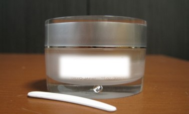
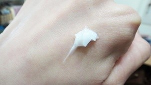

終於購入想用很久的A牌乳霜了，
一開始先簡單的來介紹一下這罐乳霜的成分有哪些：
- 南極海精華：協同膠原蛋白及彈力蛋白的作用，提升保濕度並防止水份流失
- 維他命E衍生物：完全達到滋潤效果，保護肌膚延緩老化
- 六胜：良好的撫皺成分，能改善鬆弛，緊緻肌膚，撫平細紋
- 黃芩萃取液：舒緩肌膚，淡化暗沉
- 維他命C衍生物：淨白肌膚底層，讓肌膚明亮有光澤

打開包裝後，會看到裡面有一罐乳霜還有附贈的小挖勺，
在這裡跟大家分享一個使用乳霜的小常識，
挖勺是為了防止我們直接用手挖乳霜，直接挖的話，很容易會讓乳霜產生變質，
其實比較有名的牌子的乳霜都會付挖勺啦~
所以建議大家盡量不要用手直接挖乳霜喔!

A牌乳霜摸起來的感覺就是霜狀的質地，比一般乳液扎實、細緻的感覺，很好推開，而且因為是油包水型的霜，在臉上推開後會變比較水。
可能一開始會覺得沒什麼效果，但持續使用大概兩個禮拜發現膚色真的有變的比較明亮，而且膚況也變得比較穩定了，痘痘的狀況也會穩住。
我通常在上妝前也會用這罐，在擦完化妝水後用，效果非常好，很持妝，膚色也比較沒原本那麼暗沉。
真的還蠻喜歡這罐乳霜的，要說比較不能接受的可能就是剛擦在臉上的時候會有一點黏膩的感覺，需要多給它一點時間，等它吸收後就會比較好了。
還有保濕力真的有點稍嫌不夠力，不太適合冬天使用，建議搭配其他保養品一起使用，像是精華液之類的，會比較有保濕的感覺。
說到價格方面，有些人會覺得有點偏貴，但我個人是覺得以這罐的效果來說，比起其他專櫃真的親民很多了!
如果想要嘗試開架以外的保養產品，非常建議可以從A牌乳霜開始入手喔!
距離限時折扣結束還有